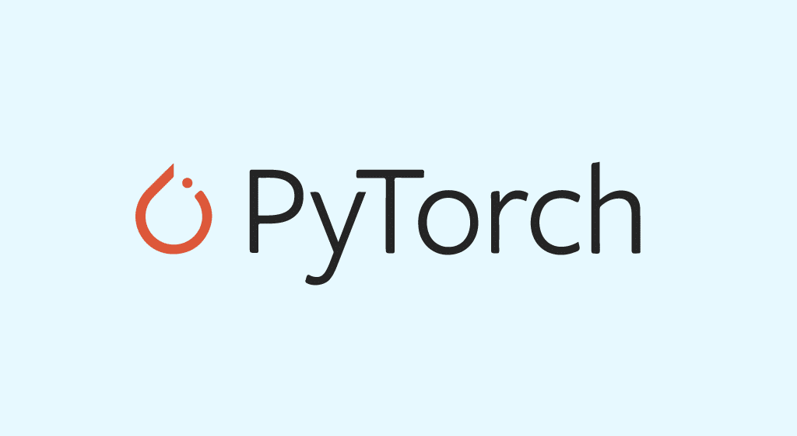

- Régression linéaire avec bruit (exemple : apprendre la formule
Voir le projet sur GitHub
PyTorch est une bibliothèque open source de machine learning en Python, développée par Meta et basée sur Torch. Je l’ai apprise en autodidacte grâce aux ressources disponibles sur la documentation officielle.
Dans le cadre de mon apprentissage, j’ai réalisé plusieurs petits projets pour me familiariser avec la bibliothèque :
- Classification binaire simple (par exemple : prédire si un point appartient à un cercle).- Régression linéaire avec bruit (exemple : apprendre la formule
3 × X[0] + 2 + bruit).
Mon projet principal a consisté à concevoir un Convolutional Neural Network (CNN) capable de classer des images de chiens et de chats. J’ai utilisé le dataset Dogs vs Cats disponible sur Kaggle, et j’ai entraîné le modèle pour distinguer les deux classes avec une bonne précision.
Contact
Email : manon.davion@gmail.com
Linkedin : Manon Davion